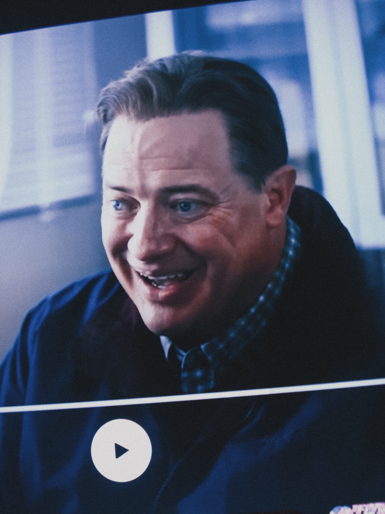

I watched Rental Family the other night with almost no expectations.
Which, in my experience, is usually the best way to encounter a movie that ends up sticking with you longer than you planned.
The premise is simple enough:
In Japan, there are companies that allow you to rent people.
Parents, partners, friends — to temporarily occupy roles in your life.
At first it sounds absurd. Maybe even a little bleak.
But the more the film unfolds, the more it begins to feel like a strangely honest reflection of how people already live.
Most of us are performing some version of ourselves anyway.
Watching it, I couldn’t shake the feeling that this isn’t just about Japan.
We already live inside transactional relationships — we’ve just gotten better at disguising them.
Sex becomes something negotiated through apps, attention traded in small, measured doses.
Work — especially gig work — asks for pieces of your time, your personality, your emotional bandwidth, all parceled out and priced.
Friendliness can start to feel like part of the job description.Then there’s the loneliness. Not just here in the States, but everywhere. A low, persistent hum. People orbiting each other, connected but not quite touching.
So when Rental Family presents connection as something you can temporarily access — something structured, agreed upon, and paid for — it doesn’t feel dystopian. It feels familiar.
Maybe the difference isn’t that these relationships are transactional. Maybe it’s that, for once, the terms are honest.

Still from Rental Family.What struck me most wasn't the concept itself, but the quiet dignity the film gives its characters.
No one is mocked for needing connection. No one is shamed for wanting to rehearse the shape of a normal life.
Instead, the film treats these arrangements with a kind of patience — almost tenderness.
Watching it, I kept thinking about how much of modern life already functions this way:
Small social performances, polite fictions, temporary roles we step into for the sake of harmony.
Maybe Rental Family isn’t exaggerating reality at all. Maybe it’s just making the quiet arrangements visible.
In that sense, the film feels less like satire and more like documentation — a gentle observation of how people improvise closeness when real intimacy feels too far away.
Which is why, despite its strange premise, it ends up feeling like a very human movie.